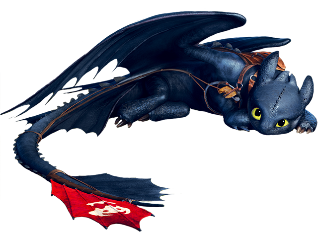

Soluço é um garoto viking que vive na ilha de Berk, onde todos caçam dragões. Ele é diferente dos outros vikings: mais inteligente e menos forte. Um dia, ele consegue derrubar um dragão raro, o Fúria da Noite, mas em vez de matá-lo, decide ajudá-lo. Ele chama o dragão de Banguela e aos poucos ganha sua confiança.
Enquanto treina em segredo com Banguela, Soluço aprende que os dragões não são monstros, mas criaturas inteligentes e amigáveis.
Usando esse conhecimento, ele se destaca nos treinos de combate a dragões. No final, ele precisa provar à aldeia que os dragões não são inimigos. Ele enfrenta um dragão gigante com a ajuda de Banguela e salva todos. Depois disso, vikings e dragões passam a viver juntos em harmonia.
DESCUBRA MAIS SOBRE ESSE INCRIVEL MUNDO!